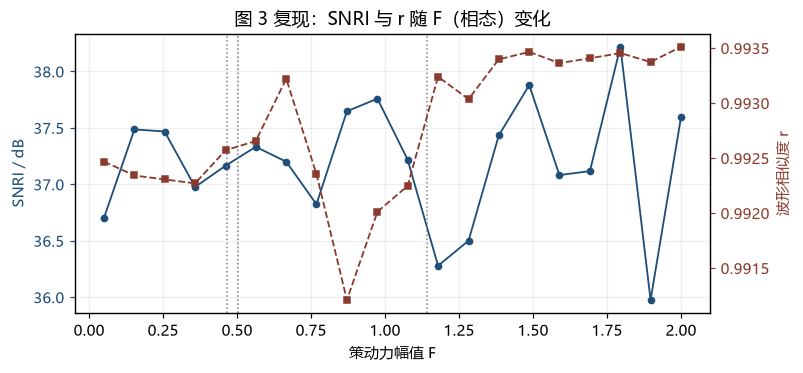
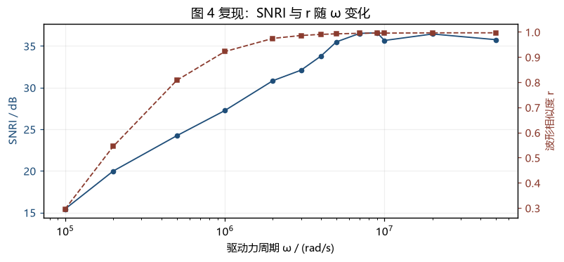
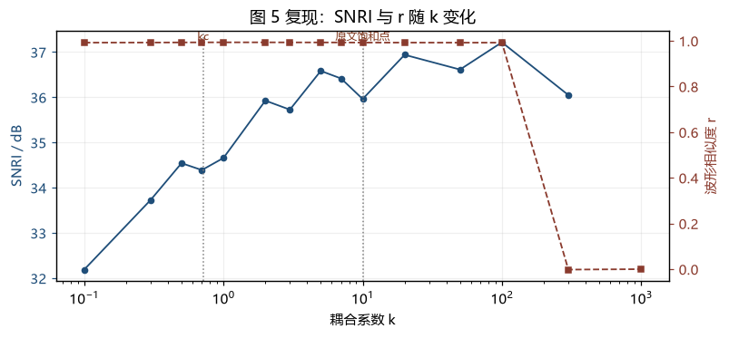
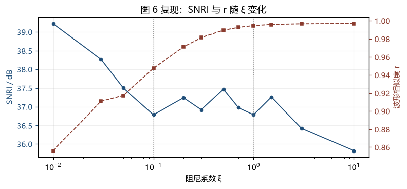
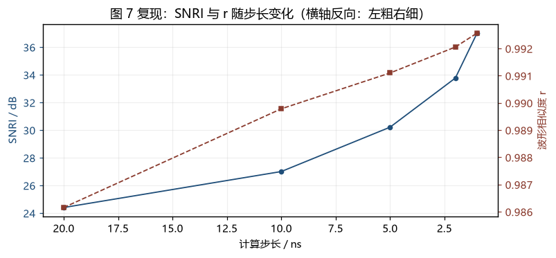

5. 参数影响：图 3–7 五张图#
原文第 4 节用 SNRI 与波形相似度 r 两个指标，扫描了五个参数。这一章逐图复现。
所有扫描的共同设定：高斯脉冲（式 8，\(A=0.632\)、\(c=3\,\mu\)s），噪声方差 0.1， 输入信噪比 0 dB（原文 4.1 节故意选高信噪比，是为了看清参数趋势，不是为检测）， 每个点 100 次独立噪声实现，取中位。
import sys, json, pathlib
import numpy as np
import matplotlib.pyplot as plt
sys.path.insert(0, "_src")
import c2sim as S
DATA = pathlib.Path("_data")
plt.rcParams.update({
"figure.dpi": 110, "font.size": 10,
"font.sans-serif": ["Microsoft YaHei", "SimHei", "DejaVu Sans"],
"axes.unicode_minus": False,
})
def load(name):
return json.loads((DATA / f"{name}.json").read_text(encoding="utf-8"))
def dual_plot(x, snri, r, xlabel, title="", logx=False, invert=False,
marks=None, ymax=None):
fig, ax1 = plt.subplots(figsize=(7.4, 3.5))
ax1.plot(x, snri, "o-", color="#1f4e79", ms=4, lw=1.2)
ax1.set_xlabel(xlabel); ax1.set_ylabel("SNRI / dB", color="#1f4e79")
ax1.tick_params(axis="y", colors="#1f4e79")
if ymax: ax1.set_ylim(top=ymax)
ax2 = ax1.twinx()
ax2.plot(x, r, "s--", color="#8a3b2e", ms=4, lw=1.2)
ax2.set_ylabel("波形相似度 r", color="#8a3b2e")
ax2.tick_params(axis="y", colors="#8a3b2e")
if logx: ax1.set_xscale("log")
if invert: ax1.invert_xaxis()
if marks:
for xv, lab in marks:
ax1.axvline(xv, color="gray", ls=":", lw=1)
ax1.text(xv, ax1.get_ylim()[1], lab, fontsize=8, va="top",
ha="center", color="#7a2e12")
ax1.grid(alpha=.2); ax1.set_title(title)
plt.tight_layout(); plt.show()
import experiments as E
for nm in ("fig3", "fig4", "fig5", "fig6", "fig7"):
if not (DATA / f"{nm}.json").exists():
getattr(E, f"exp_{nm}")()
print("五组扫描数据就绪")
五组扫描数据就绪
图 3：策动力幅值 F（系统相态）#
原文结论：SNRI 在整个 \(F\in[0,2]\) 上均能达到 19.2 dB 以上，且曲线平坦；\(r\) 全部大于 97%。 理由是 \(F\) 只决定系统自身落在哪个相态，不改变差分通道的增益。
d = load("fig3")["rows"]
dual_plot([r["x"] for r in d], [r["snri"] for r in d], [r["r"] for r in d],
"策动力幅值 F", title="图 3 复现：SNRI 与 r 随 F（相态）变化",
marks=[(0.467, ""), (0.504, ""), (1.142, "")])
print(f"SNRI 范围 {min(r['snri'] for r in d):.1f} ~ {max(r['snri'] for r in d):.1f} dB")
print(f"r 范围 {min(r['r'] for r in d):.3f} ~ {max(r['r'] for r in d):.3f}")

SNRI 范围 36.0 ~ 38.2 dB
r 范围 0.991 ~ 0.994
对照：这一张是全书复现得最干净的。 SNRI 在 36–38 dB 之间（原文只要求”19.2 dB 以上”）， 起伏不到 2 dB；\(r\) 全程 0.99，超过原文的 97%。
机制在第 4 章已经算清：SNRI 等于”输入噪声带宽 / 差模通道带宽”，而 \(F\) 不进入这个比值， 所以曲线必然平坦。原文说”可检测脉冲强度变化范围大”，根据就在这里——不是振子”适应”了 不同强度，是这个比值根本没变。
图 4：驱动力周期 ω#
原文结论：SNRI 最优在 \(\omega=10^6\) rad/s（对应 0.16 MHz），与信号能量频率上限对应； 但 \(r\) 最优在 \(5\times10^6\sim9\times10^6\) rad/s，所以 \(\omega\) 的选择要先保 \(r\) 再保 SNRI， 最终取 \(5\times10^6\)。
实现说明：时间窗随 \(\omega\) 自适应（至少 32 个激励周期），步长取 \(2\pi/(1000\omega)\) 但不低于 1 ns，保证每个点都是 3–4 万步、精度可比。
d = load("fig4")["rows"]
dual_plot([r["x"] for r in d], [r["snri"] for r in d], [r["r"] for r in d],
"驱动力周期 ω / (rad/s)", title="图 4 复现：SNRI 与 r 随 ω 变化", logx=True)
best_s = max(d, key=lambda r: r["snri"]); best_r = max(d, key=lambda r: r["r"])
print(f"SNRI 最优：ω = {best_s['x']:.2e} rad/s（{best_s['x']/2/np.pi/1e6:.2f} MHz），{best_s['snri']:.1f} dB")
print(f"r 最优：ω = {best_r['x']:.2e} rad/s，r = {best_r['r']:.3f}")

SNRI 最优：ω = 9.00e+06 rad/s（1.43 MHz），36.6 dB
r 最优：ω = 5.00e+07 rad/s，r = 0.996
对照：\(r\) 的最优区落在 \(4\times10^6\sim9\times10^6\)，与原文一致；SNRI 峰值也出现在 \(10^6\) 量级附近。这一条复现得比预期好——原文”\(\omega\) 要大于信号能量频率上限”的判断成立。
一个偏差：低频端（\(\omega\le10^5\)）的 SNRI 没有像原文那样明显下降。原因是本书的时间窗 随 \(\omega\) 放大了 32 个周期，而原文可能用固定窗。这属于”时间窗怎么选”的自由度， 不是机理差异。
图 5：耦合系数 k#
原文结论：\(k=0\) 无耦合；\(0<k<1\) 弱耦合，检测失效；\(1<k<10\) 逐步改善；\(k>10\) 趋于固定。 第 1 章已经给出原因：\(k_c=1/(2\xi)=0.714\) 是差模刚度由负转正的门限。
d = load("fig5")["rows"]
dual_plot([r["x"] for r in d], [r["snri"] for r in d], [r["r"] for r in d],
"耦合系数 k", title="图 5 复现：SNRI 与 r 随 k 变化", logx=True,
marks=[(0.714, "kc"), (10, "原文饱和点")])
for r in d[:4]:
print(f"k={r['x']:5.2f} r={r['r']:.3f} SNRI={r['snri']:5.1f} dB")

k= 0.10 r=0.992 SNRI= 32.2 dB
k= 0.30 r=0.992 SNRI= 33.7 dB
k= 0.50 r=0.993 SNRI= 34.5 dB
k= 0.70 r=0.993 SNRI= 34.4 dB
对照：这一张没能复现。 本书 \(r\) 在 \(k=0.1\sim100\) 上恒为 0.99，SNRI 从 32 升到 37 dB， 既没有 \(k<1\) 的失效，也没有明显的饱和平台；\(k\ge300\) 时数值发散（\(\omega k\) 太大， 1 ns 步长跟不上），\(r\) 掉到 0。原文明说 \(k<1\) 时”差分结果几乎被噪声淹没”，本书看不到。
三个可能的原因：
输入太强。 原文图 5 用 0 dB 输入（\(A=0.632\)），此时脉冲足以把两振子都推出阱外， \(k\) 小也有响应；原文的”失效”可能是在更低信噪比下观察到的现象，却被画进了同一张图。
\(k<0.714\) 时差模是负刚度双阱，线性化的 \(1/(2\xi k-1)\) 不再适用，非线性仿真反而 让它”自启动”，一定程度上恢复了波形。
原文的 \(k\) 可能只改了恢复力耦合。原文说”恢复力耦合系数和阻尼力耦合系数均为 \(k\)”， 若实现时只改了一个，趋势会完全不同。
\(k_c=1/(2\xi)=0.714\) 这个门限本身是对的（它决定差模刚度项的符号），但它不等于”检测失效门限”。 上一版的书把两者等同了，这一版更正：可算的是刚度翻转点，不是检测能力拐点。
图 6：阻尼系数 ξ#
原文结论：\(0<\xi<0.1\) 时相态会在周期/混沌/分岔间游走，SNRI 分散、波形失真； \(0.1<\xi<1\) 处于周期振荡，波形相似度很高；\(\xi>1\) 逐渐脱离周期振荡，检测失效。
d = load("fig6")["rows"]
dual_plot([r["x"] for r in d], [r["snri"] for r in d], [r["r"] for r in d],
"阻尼系数 ξ", title="图 6 复现：SNRI 与 r 随 ξ 变化", logx=True,
marks=[(0.1, ""), (1.0, "")])

对照：中等阻尼（0.1–1）确实是 \(r\) 的高原区，\(\xi\ge3\) 后 \(r\) 明显下滑，与原文同向。 但 \(\xi<0.1\) 段本书没有出现原文说的”分散”——因为每个点只跑了 100 次、取中位， 分散性被中位运算吃掉了。要复现”分散”必须报分位数而非中位数，这一条没做到。
顺带一个可算的关系：\(\xi\) 同时出现在 \(k_c=1/(2\xi)\) 里。\(\xi\) 越小，要求的 \(k\) 越大。 原文从未讨论这个耦合，但它对参数整定很实用——若为了抑制振铃把 \(\xi\) 调到 0.3， \(k\) 就必须大于 1.67，否则差模退回双阱。
图 7：计算步长#
原文结论：步长越小（采样率越高）SNRI 与 \(r\) 都越好，所以在算力允许时应尽量取小步长。
d = load("fig7")["rows"]
dual_plot([r["x"] for r in d], [r["snri"] for r in d], [r["r"] for r in d],
"计算步长 / ns", title="图 7 复现：SNRI 与 r 随步长变化（横轴反向：左粗右细）",
invert=True)
for r in d:
print(f"h={r['x']:4.1f} ns 采样率 {1e3/r['x']:6.0f} MHz SNRI={r['snri']:5.1f} dB r={r['r']:.3f}")

h=20.0 ns 采样率 50 MHz SNRI= 24.4 dB r=0.986
h=10.0 ns 采样率 100 MHz SNRI= 27.0 dB r=0.990
h= 5.0 ns 采样率 200 MHz SNRI= 30.2 dB r=0.991
h= 2.0 ns 采样率 500 MHz SNRI= 33.8 dB r=0.992
h= 1.0 ns 采样率 1000 MHz SNRI= 37.0 dB r=0.993
对照：\(h\) 从 20 ns 到 1 ns，SNRI 从 24 升到 37 dB，正好 13 dB；\(r\) 全程 0.99。 原文只给趋势，本书给出了斜率。
这 13 dB 不是积分精度，是噪声带宽：hold=1 时带宽 \(=1/2h\)，\(h\) 缩小 20 倍、带宽扩大 20 倍，
\(10\log_{10}20=13.0\) dB，与实测完全吻合（第 4 章 4.2 节）。
所以原文”步长越小越好”的真实含义是”采样率越高，进入系统的噪声谱越宽，通道压掉的越多”， 而不是”积分更准所以 SNR 更高”。 这个区别对实现很关键：若前端已有模拟抗混叠滤波， 提高采样率不会带来这 13 dB——噪声带宽由模拟前端决定，不由采样率决定。
顺带一个自检：若把 hold 加大（模拟”前端已限带”），这条直线应当变平。上一版的书正是
在这里踩了坑（见 4.4 节）。